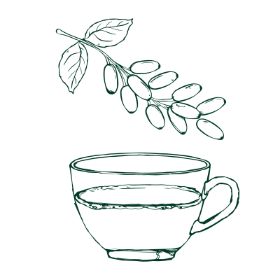
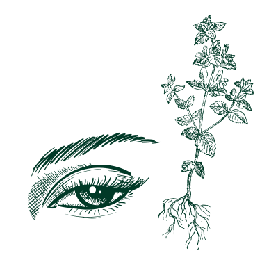
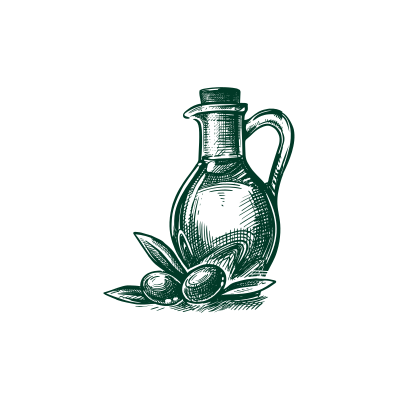

Eye Health
Explore those cultural home remedies to see how eye health can be treated differently.

×
China: Goji Berries
Goji berries have been applied in Chinese medical practices for a long period of time. The goji berry is a sweet berry and can be applied to treat dry eyes, blurred vision, photosensitivity, night-blindness, and reduced visual acuity.
Ingredients:
- A handful of goji berries
- Hot water
Steps:
- Soak the goji berries into a cup of hot water for half an hour. Feel free to add any sweetener.
- Enjoy and take a rest!.

×
Europe: Eyebright Herb
The name of the eyebright herb describes its function. During the middle age, it has been used in European herbal medicine for eye strain and eye-related issues. Now, eyebright spreads globally as a eye-soothing herb and has been applied in eye drips.
Ingredients:
- Eyebright euphrasia
- Hot water
- Eyebright medicine drop(can be directly applied to eyes)
Steps:
- Prepare a handful of eyebright euphrasia
- Soak the eyebright herb to a cup of water for 15-30 minutes

×
Middle East: Olive Oil
Olive means “the blessed trees” in Islamic culture. It has been cherished from both tradition and religion as a useful substance in eye care practice.
Ingredients:
- Olive oil
Steps:
- Apply some drip of olive oil around the eyes, feel free to do massage around the eyes' muscles as well.
